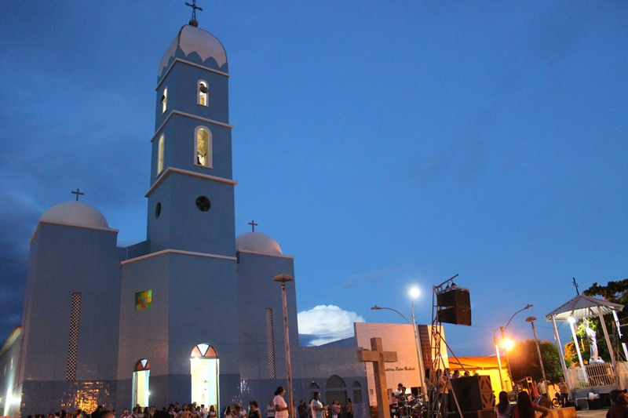
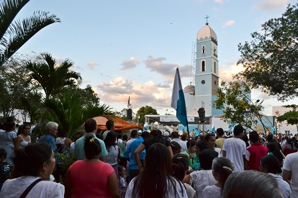
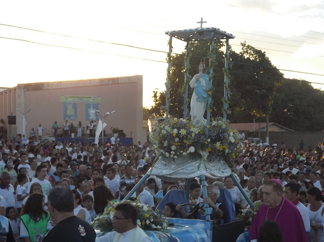

Festejos de Nossa Senhora da Conceição
A tradicional Festa da Padroeira é um dos momentos mais marcantes e de grande devoção em Pedro II, reunindo milhares de fiéis e visitantes em celebrações religiosas e culturais.
Além das missas e procissões, o evento conta com apresentações culturais na praça, barracas de comidas típicas e momentos de confraternização comunitária.
Programação do Evento
Domingo • 28 de Novembro
05:00
Abertura dos festejos
Igreja Matriz de Nossa Senhora da Conceição
17:30
Procissão
Igreja Matriz de Nossa Senhora da Conceição
19:00
Missa
Praça da Matriz
21:00
Apresentação da Banda de Música Mestre alessandro
Palco da Praça da Matriz
Segunda-Feira • 29 de Dezembro
19:00
Missa
Principais ruas do centro
20:30
Movimento de Barracas e Leilão
Praça da Matriz • Espaço Cultural


